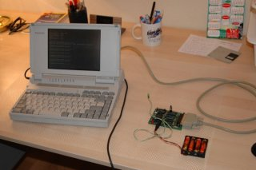

 |
|
En esta página encontramos una serie de programas de ejemplo para facilitar la realización de la práctica 3. El objetivo de dicha práctica es programar el driver para controlar la tarjeta del "analizador lógico". El alumno podrá utilizar este código siempre y cuando lo entienda, ya que podrá ser objeto de evaluación.
El Bit 5 (Bidireccional On/Off) no me funciona. (23-ene-2005)
En algunos ordenadores el bit del registro de control que controla la Bi-direccionalidad del puerto no es el bit 5. Por ejemplo en los oredenadores Toshiba modelo T2000SX es el bit 7. En los ordenadores del Laboratorio es el bit 5.
| Programa | Descripción | Enlace | Última actualización |
| Efecto | Programa que rota un caracter en la esquina superior derecha. No usa interrupciones.Optimizado para CPU 386sx | efecto.asm | 13-ene-05 |
| Sonido | Programa que muestra como usar el tercer timer para generar sonidos | sonido.asm | 08-dic-04 |
| Timer | Programa que usa las interrupciones del Timer0 para rotar un caracter | timer.asm | 08-dic-04 |
| RTC | Programa que usa las interrupciones del RTC para rotar un caracter. Este es el mecanismo a seguir en la practica 3 | rtc.asm | 13-ene-05 |
| Driver | Ejemplo de estructura basica del driver. Preparado para generacion de archivo .COM | drvmio.asm | 07-dic-04 | Paralelo | Programa ejemplo de envio de datos por el puerto paralelo. Hace parpadear un LED por espera activa. (Optimizado para CPU 386) | paralelo.asm | 13-ene-05 | Paralelo-I | Programa ejemplo de envio de datos por el puerto paralelo. Hace parpadear un LED mediante el RTC | paralelo1.asm | 13-ene-05 | Paralelo-II | Programa que enciende un LED cuando detecta que se ha apretado un pulsador. Ejemplo de envío y recepción en el puerto paralelo. | paralelo2.asm | 13-ene-05 |
| IEA ROBOTICS | Página de inicio |
| Andrés Prieto-Moreno Torres | Página Personal |